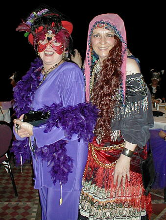
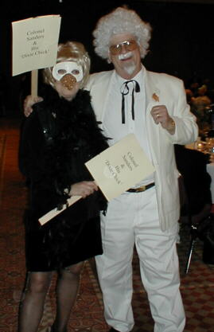
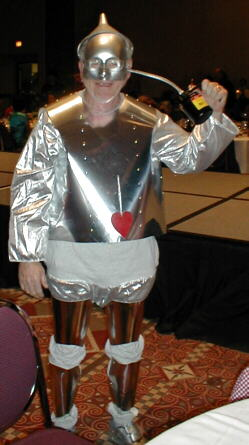
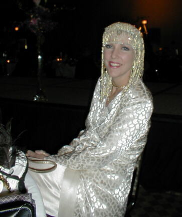
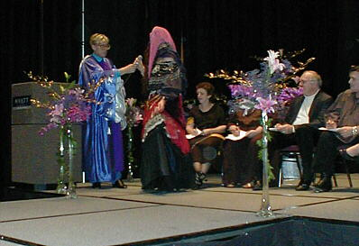

Santa Fe 2000 Doll Show - Page 7


A couple of party animals.

Colonel Sanders and his "Dixie Chick".

The Tin Man....aka Bobby Huston.

This lady is as pretty as a doll.

The Wizard himself onstage....Peter Coe.